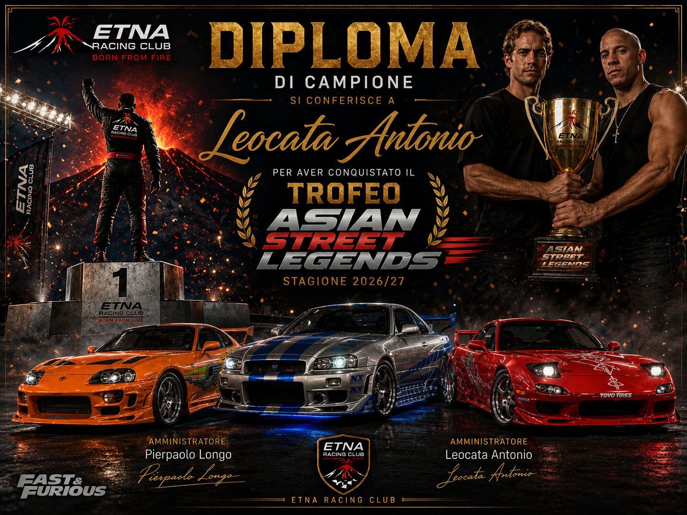
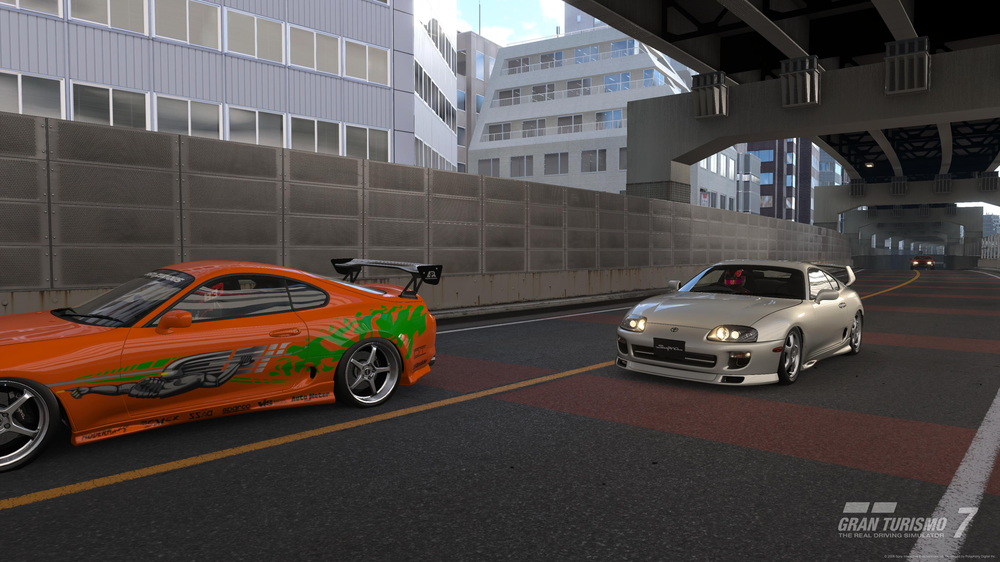
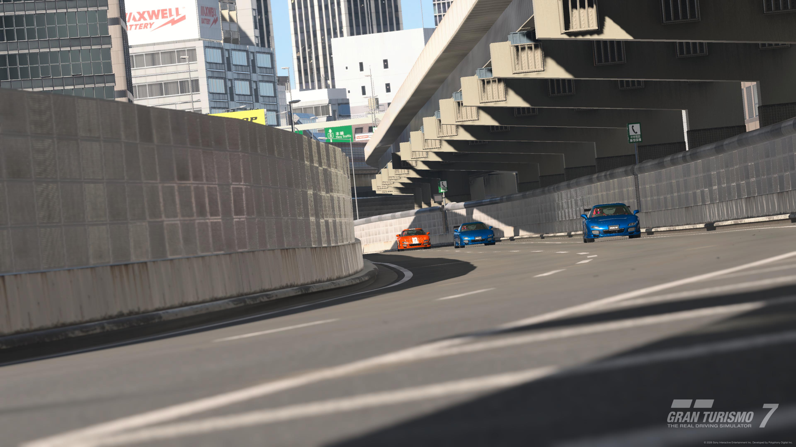
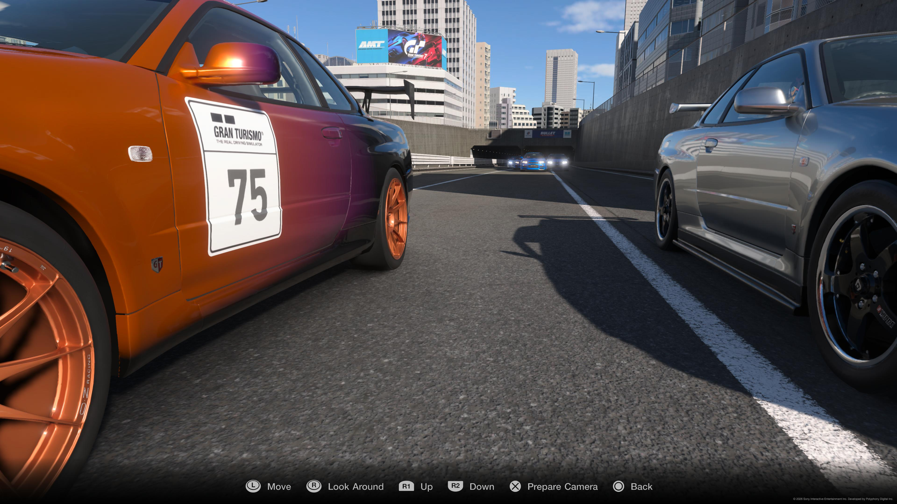
Poco fa si è concluso l evento ispirato alla Saga di Fast and Furious
La Pole Position di Gara 1 (Con la Supra) è andata ad un ispiratissimo Antonio, capace poi anche di stravincere la gara
Quello che è invece successo in Gara 2 è da prendere e consegnare all Unesco degli E-Sports, nel primo dei cinque giri succede praticamente di tutto, Claudio che era partito in testa riesce a scappare, ma dietro si forma una fila di 6 cani rabbiosi che lottano tra di loro fino alla fine, al traguardo Antonio riesce a prendersi la 2° posizione (e a consolidare la vetta della competizione) davanti a Giovanni distaccato di meno di mezzo secondo, distanziato di 4 secondi dal londinese arriva William che precede Fabio, Pierpaolo e Nicola, tutti racchiusi in meno di 1 secondo e mezzo
In Gara 3 Nicola riesce a mantenere la testa per circa 2 giri, poi viene sopravanzato da Pierpaolo che si invola verso la vittoria (risultato che gli permette di chiudere la competizione al secondo posto), Nicola difende benissimo la sua seconda posizione, dietro di lui arrivano Claudio e Antonio capaci di mantenere un distacco onorevole, mentre gli altri 3 hanno problemi e arrivano particolarmente staccati
L evento viene vinto comodamente da Antonio, dietro di lui classifica molto corta con soli 10 punti di distacco tra il 2° e il 7°
Con queste 3 mini gare si chiude la Campagna Estiva, ma i motori restano comunque accesi, tra appena 7 giorni si riprenderà con quella Autunnale, subito gara 1 del campionato Kart nella pista di Tsukuba
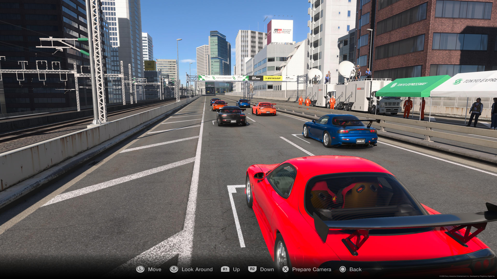
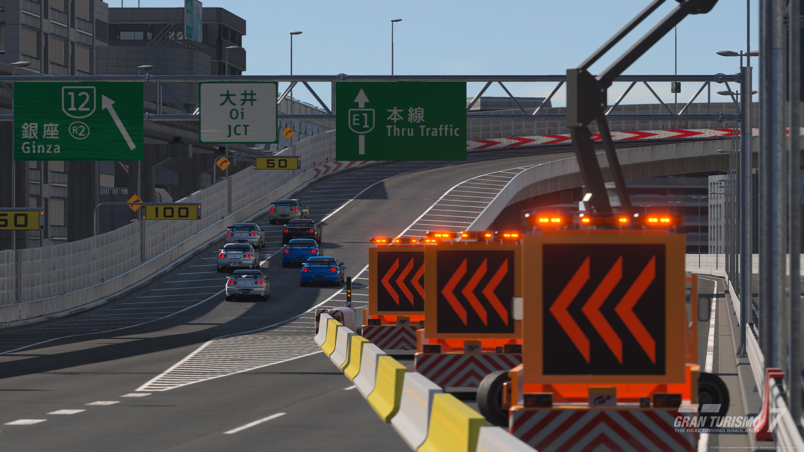
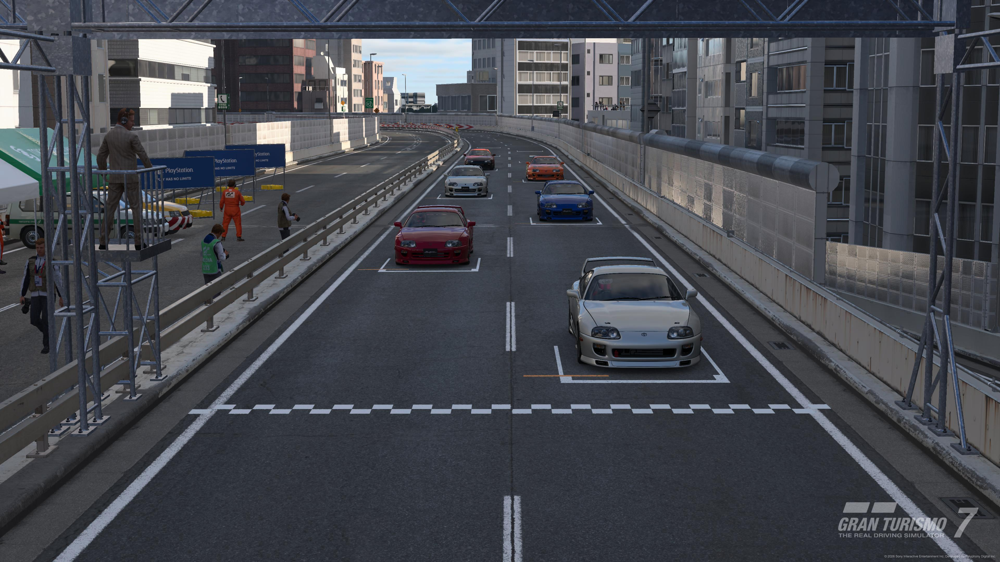
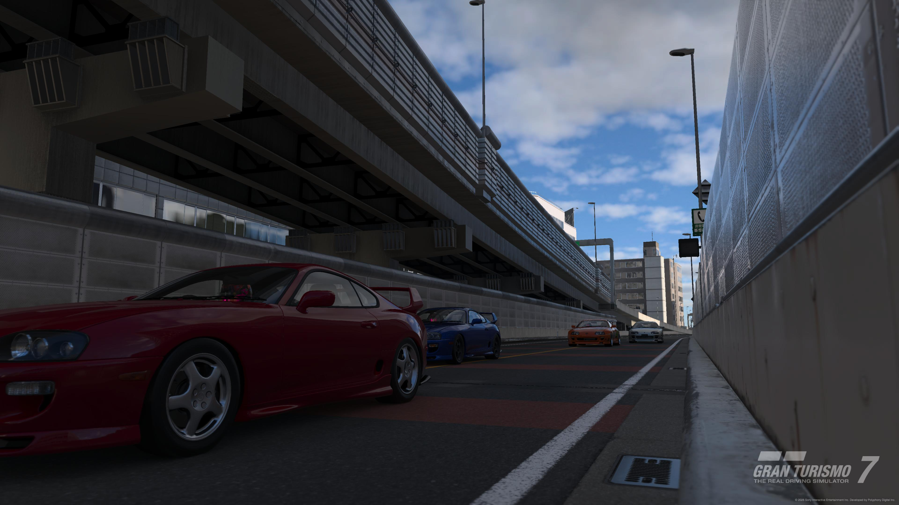
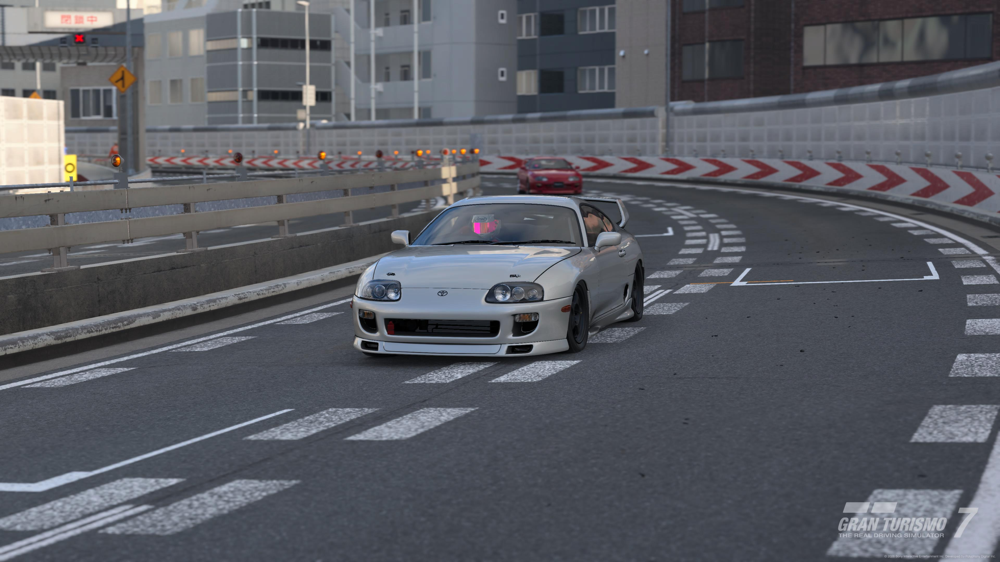
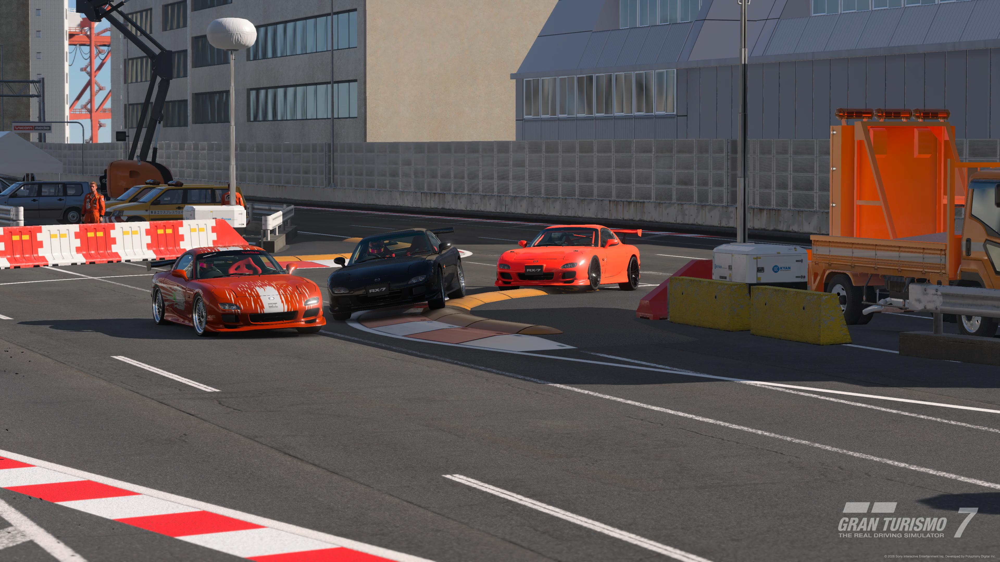
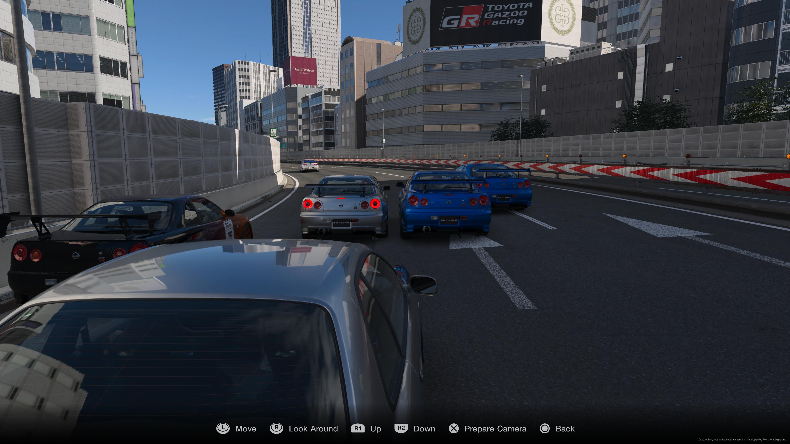
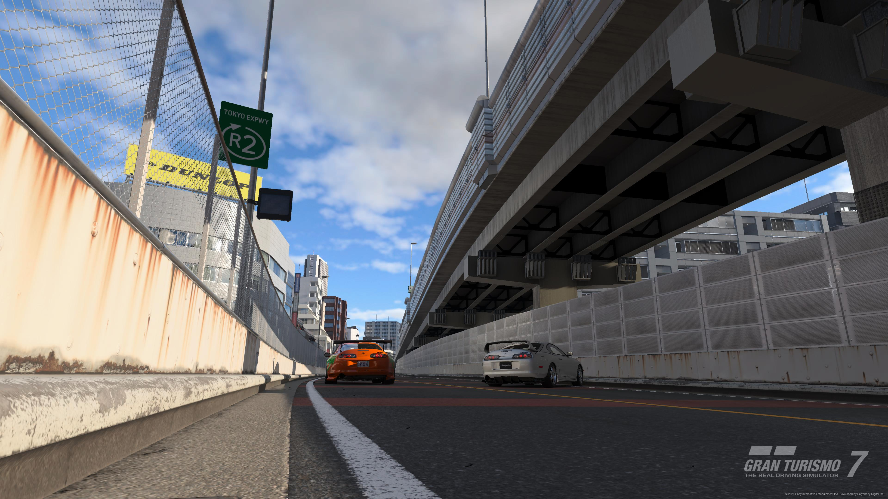
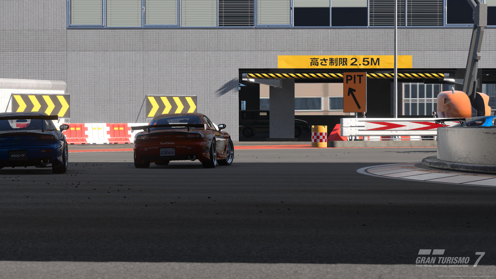
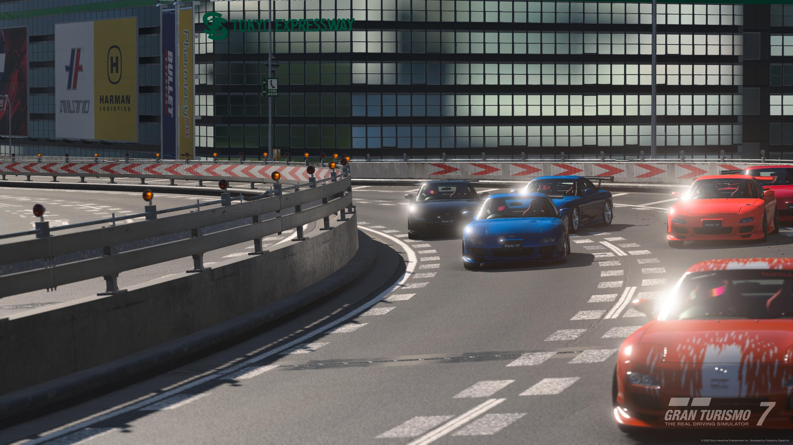
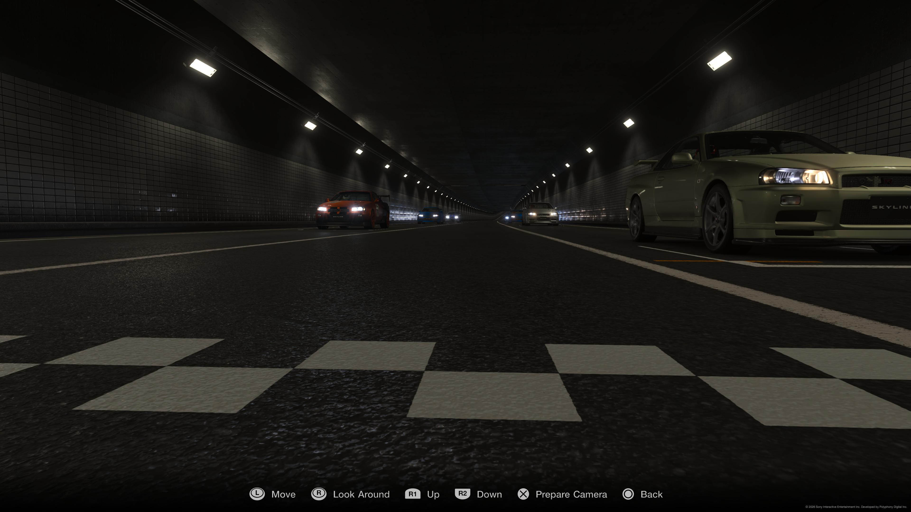
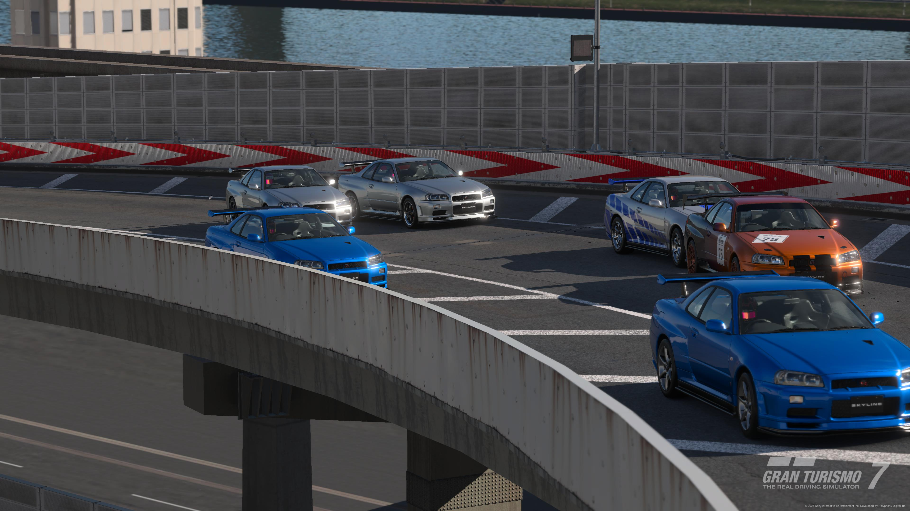